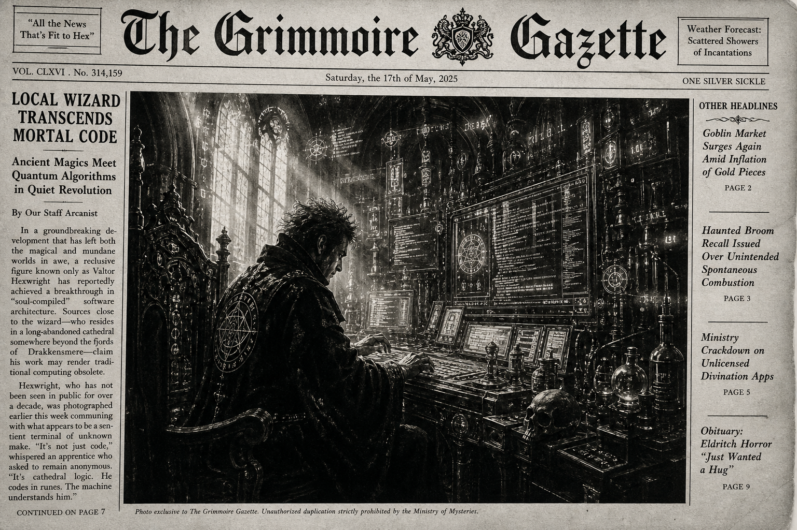

Morning Edition
6:00 AM CDTFinance & Markets
Jobs Print Flips the Macro Script
Friday's July employment report landed colder than the overnight consensus: employers cut 23,000 jobs, and May–June payrolls were revised down a combined 103,000. Unemployment slipped to 4.1% for the wrong reason — 264,000 people left the labor force — while participation fell to 61.4%. Markets still liked the dovish read: S&P 500 +0.6% to a record 7,757.64, Dow +0.3% to 54,036.93, Nasdaq +1.3% to 26,690.62. Next week’s CPI is the real boss fight.
Source: AP jobs report; AP/Standard-Speaker market wrap, August 7, 2026Yields Ease, Oil Holds the Tension
Treasury yields fell after the soft payrolls print — the 10-year near 4.64%, the 2-year around 4.20% — as odds of a September Fed hike slipped. Brent still sits near $83.55 after Middle East escalation, so inflation remains the daemon that refuses to die. Corporate earnings, meanwhile, are on track for the strongest S&P 500 profit growth since 2021, with Airbnb jumping ~17% on a beat.
Source: AP market wrap, August 7, 2026PE Still Loves Clean Brands
Private equity’s 2026 tape remains “fewer deals, bigger conviction.” Apollo’s £5.7bn easyJet takeover still anchors the week’s PE story, while industry outlooks keep pointing to dry powder, larger average checks, and a slowly reopening exit market if borrowing costs keep easing after soft labor data.
Source: The Guardian easyJet/Apollo; PwC PE outlook, August 2026World & US
Blanche Confirmed AG After Midnight
In a marathon overnight session that spilled past 4 a.m. Saturday, the Senate confirmed Todd Blanche as U.S. attorney general 50–49. Only Republicans Susan Collins and Lisa Murkowski joined Democrats in opposition. Blanche, Trump’s former personal lawyer and acting AG since April, cleared the path after holdouts extracted assurances that included rescinding a $1.8 billion “anti-weaponization” fund — with critics still warning independence remains the open issue.
Source: NBC News Blanche confirmation, August 8, 2026Labor Softness Meets Midterm Clock
AP frames the jobs stall as both a Fed puzzle and a political one three months from midterms. Local public schools cut 50,000 jobs in July, restaurants/bars 26,000, retailers 19,000; manufacturing and construction still eked out gains. The dual mandate just got noisier: weaker hiring argues against hikes, sticky oil-linked inflation still argues for caution.
Source: AP jobs analysis, August 7, 2026Iran Conflict Still Prices Energy
The U.S.–Iran war remains the slow-burn global process under every market tape. Oil’s rebound above $83 and talk of Strait of Hormuz off-ramps keep energy as both inflation input and geopolitical interrupt — the background thread that still owns the weekend risk monitor.
Source: AP market/oil context, August 7, 2026
The Saturday Scrying Lens: a code-mage steadies the weekend terminal while payroll ghosts, Senate runes, and cyber wards flicker across the glass.
"Saturday's magic is restoration: protect one deep focus block, reconnect with the people who sharpen you, and leave tomorrow lighter than you found today."- The Developer's Almanac
Sagittarius Horoscope
Justin, today's Sagittarius weather is social, flexible, and quietly ambitious. Jupiter lifts the outlook while the Moon wants real connection over small talk — show up as yourself and let quality time do the compounding. Money looks steady, shaped by effort rather than surprise lottery drops; balance generosity with practicality if the weekend invites spending. Rat-year note: adaptability is your superpower when collaborative projects finally unstick. Developer translation: reopen one delayed PR or design doc, present the idea cleanly, and treat friendship as first-class infrastructure. Lucky hex: #0ea5e9. Lucky command: git stash pop.
Tech, AI, Space & Crypto
-
Clarity Act Gets Its First Floor Hook
After a marathon overnight session, Senate Majority Leader John Thune filed the motion to proceed on the Digital Asset Market Clarity Act early Saturday. Too late for a pre-recess final vote, but it tees up an initial procedural test almost immediately when the Senate returns in September — still needing ~10 Democratic votes and deals on ethics, illicit finance, and stablecoin rewards.
Source: CoinDesk Clarity Act floor action, August 8, 2026 -
OpenAI Flags Critical Cyber Threshold
OpenAI says internal evals of upcoming model Astra show agentic coding/cyber gains strong enough that it “cannot rule out” Critical cyber capability under its Preparedness Framework. The company is tightening isolated testing, weight protection, monitoring, and pausing internal Astra work that doesn’t meet the new controls — transparency as a security product feature.
Source: OpenAI critical cyber capabilities note, August 7, 2026 -
Lightning Nodes Under Active Drain
CoinDesk reports another Bitcoin infrastructure exploit hitting merchant Lightning payment servers. BTCPay told users running LND to update immediately or take servers offline after attackers stole credentials that can control Lightning wallets and move funds. Infra hygiene is not optional this weekend.
Source: CoinDesk Lightning exploit report, August 8, 2026 -
Bitcoin Holds Near $65K Ward
BTC sits near $64.9K–$65K on the CoinDesk tape while soft jobs data cools hike odds and oil stays elevated. Whales and ETFs have been accumulating; Coldcard-related custody reshuffles still echo onchain. Policy hopes and macro risk are co-compiling in the same process.
Source: CoinDesk markets desk; CoinDesk jobs/crypto reaction, August 7–8, 2026 -
Saturday Build Note
Best engineering move on a soft Saturday: restore one stalled collaboration, patch the obvious security surface, and leave Monday a cleaner checkout than Friday left you.
Source: The Daily Code desk, August 8, 2026
Morning Compile
- Weekend mode: one real reconnect, one restorative focus block, one lighter mental queue.
- When macro and policy noise spike, trust local magic — verify the branch, update the deps, protect the people who matter.